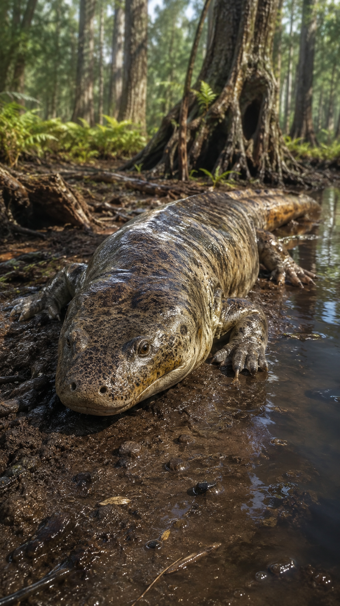
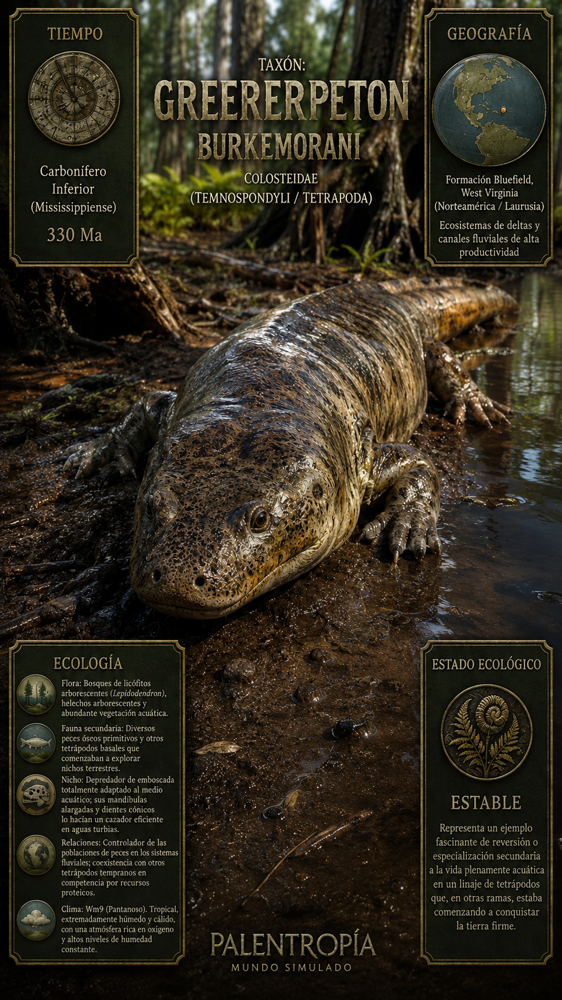
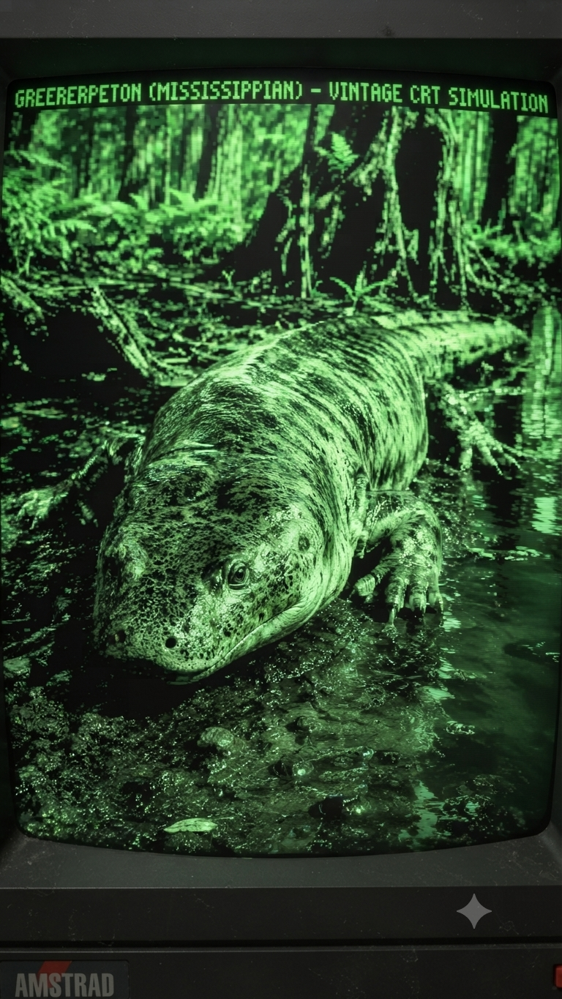
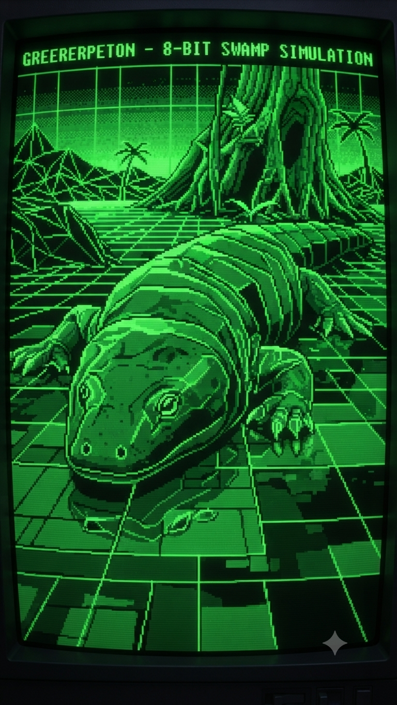

Paleoficha de Greererpeton




Periodo: Carbonífero Inferior (Mississippiense)
Edad: Hace aproximadamente 330 millones de años.
Dieta: Piscívoro.
Distribución: Formación Bluefield, West Virginia (Estados Unidos).
TAXÓN:
Greererpeton burkemorani
CLADO:
Colosteidae (Tetrapoda basal)
DIETA:
Piscívoro especializado en peces y otras presas acuáticas.
TAMAÑO:
Aproximadamente 1,5 metros de longitud.
LOCOMOCIÓN:
Acuática, con cuerpo alargado de aspecto anguiliforme y extremidades reducidas.
TIEMPO:
Carbonífero Inferior (Mississippiense), hace aproximadamente 330 millones de años.
GEOGRAFÍA:
Formación Bluefield, West Virginia (Laurussia).
EQUIVALENCIA PALEOGEOGRÁFICA:
Deltas fluviales y extensos sistemas de canales de alta productividad.
AMBIENTE PALEAOECOLÓGICO:
Lagunas y cursos de agua rodeados por densos bosques pantanosos de licófitos.
ECOLOGÍA:
• Flora: Bosques de Lepidodendron, helechos arborescentes y abundante vegetación acuática.
• Fauna secundaria: Peces óseos primitivos y otros tetrápodos basales del Carbonífero.
• Nicho: Depredador de emboscada completamente acuático; sus largas mandíbulas repletas de dientes cónicos le permitían capturar presas en aguas turbias.
• Relaciones: Regulador de las poblaciones de peces y competidor de otros tetrápodos tempranos por los recursos alimenticios.
CLIMA:
Wm9 (Pantanoso). Tropical, extremadamente húmedo y cálido, con elevados niveles de oxígeno atmosférico.
ESTADO ECOLÓGICO:
Estable. Constituye uno de los mejores ejemplos de especialización secundaria hacia una vida completamente acuática dentro de los primeros tetrápodos.
Vídeo PalEntropía:
▶ Ver Short en YouTube